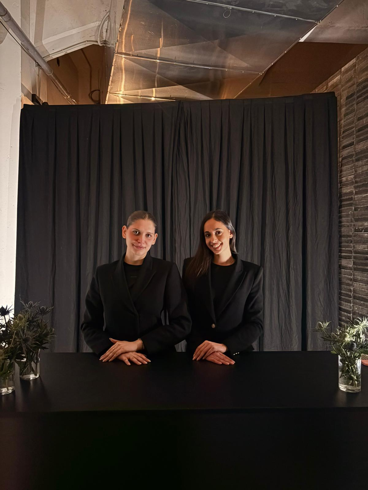

Hostesses, stewards and promoters for the Fiera del Levante, congresses and receptions in the masserie of the Itria Valley.
Quote within 24 hoursWe have been active as an agency for five years, with 13 years of experience behind us in the events sector and over 800 professionals in our network. In Puglia we cover the Fiera del Levante, congresses, corporate events and private receptions.
Puglia has become in a few years one of Europe's most requested destinations for weddings and international incentives. The difficulty is that venues are scattered across a wide territory: a masseria in the Itria Valley can be an hour from where the staff are based, and logistics weigh as much as selection.
We work across the whole region, from Foggia to Salento, organising travel together with the team and agreeing timings and transfers in advance so there are no surprises on the invoice.
Visitor welcome, stand supervision, exhibitor assistance and contact management during the general fair and specialist salons.
Registration, accreditation, welcome desk and floor assistance in convention centres and university venues.
Guest reception, list management and timing coordination in the masserie and villas of the region.
Conventions, meetings and incentive trips for Italian and international groups.
Sampling, tastings and in-store presence in Bari and the main Apulian towns.
Staff for tastings, wineries, olive mills and regional gastronomy events.
English, French, German and Spanish for the international clientele choosing Puglia.
For events spread across several venues, one contact keeps the connections and the shifts.
Venue, dates and expected guests. If the location is remote we agree the logistics straight away.
We propose the profiles available for those dates, with experience in that type of event.
Contracts, agreed transfers, uniforms and briefing before guests arrive.
A lead stays on location, keeps time with the caterer and handles every change.
Beyond days and headcount, distances matter: if the venue is far from the main towns we set out travel and accommodation openly, with no hidden items.
All of Puglia: Foggia, Barletta, Taranto, Brindisi, Lecce and Salento, as well as the Itria Valley.
Yes, it is one of our most frequent requests. Guest arrivals, list checking, timing of the day and liaison with planners and caterers.
Yes, both the general fair and the specialist salons, with staff familiar with the exhibition grounds.
Yes, alongside French, German and Spanish: the clientele for Apulian weddings and incentives is largely international.
Yes. We handle the team's logistics and agree arrival times and arrangements in advance for remote venues.
From May to September demand is high: we suggest at least a month. Out of season one or two weeks is enough.
Yes, with staff briefed on product presentation and hospitality in food and wine settings.
Yes. Every collaborator is properly contracted under current employment regulations.
The coordinator activates the replacement: at remote venues we always plan a margin of reserve.
From the exhibition grounds to the masserie of Salento. See also the other cities.
Request a quote